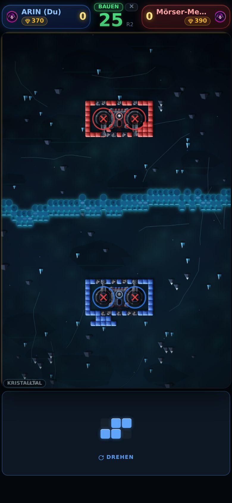
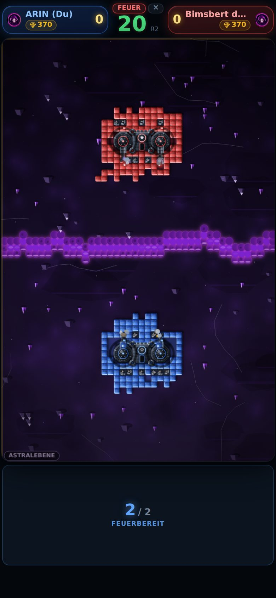
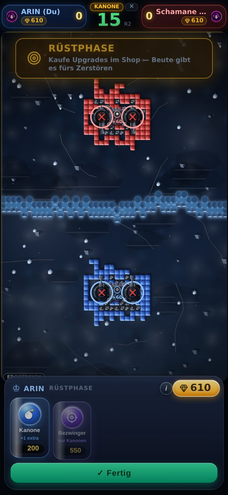
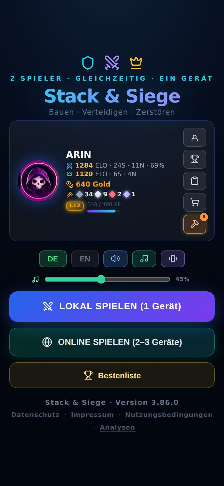
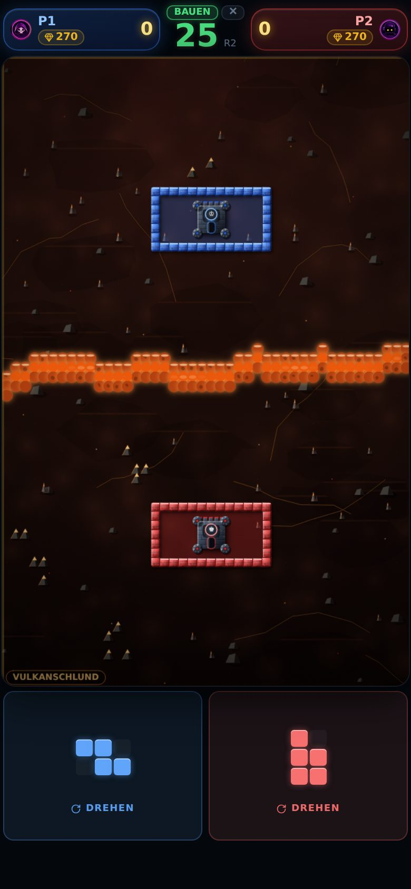
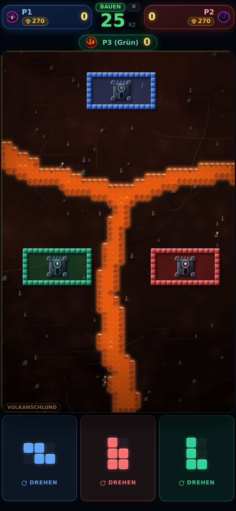

Stack & Siege
Eine Lücke, und die Burg fällt.
Burgenduell fürs iPhone. Du baust deinen Wall aus fallenden Steinen, der Gegner schießt ihn dir wieder auf.
Beta ladenKostenlos über TestFlight, Apples offizielle Test-App. Lieber ohne Installieren? Im Browser spielen.
Sofort im Browser spielenDie iOS-Beta liegt bei Apple zur Prüfung. Sobald sie offen ist, steht der TestFlight-Knopf an dieser Stelle.
Bauen. Schießen. Rüsten.




Einmal aufstellen, danach im Takt: bauen, schießen, rüsten. Ihr spielt gleichzeitig, niemand wartet auf einen Zug.
Geschlossen heißt geschlossen.
Am Ende der Bauphase lässt das Spiel Wasser von außen in dein Feld laufen. Erreicht es deine Burg, bist du raus.
Diagonale zählen. Zwei Steine, die sich nur an der Ecke berühren, halten nichts auf — und deine Kanonen sind keine Mauer.
Legt das Telefon zwischen euch.
Gespielt wird gleichzeitig, jeder mit eigenem Bauteil. Das Spiel erkennt an der Stelle, die dein Finger berührt, wem er gehört.


Was es kostet und was es von dir weiß.
- Es kostet nichts Keine Werbung, keine Käufe, kein Abo, keine Energie, die sich erst wieder auflädt. Der volle Umfang steht vom ersten Start an offen.
- Kein Pay-to-Win Gold und Kosmetik sind Anerkennung für Gespieltes. Kein Gegenstand erhöht Schaden, Reichweite oder Nachladezeit.
- Offline gehört dir Gegen den Bot und am selben Gerät läuft alles auf dem Gerät. Dein Fortschritt liegt dort und sonst nirgends.
- Online braucht wenig Für Partien über das Netz gehen dein selbst gewählter Name, der Spielstand und die Punktzahl an einen Server. Kein Klarname, keine E-Mail, keine Werbekennung.
Zwei Burgen. Ein Fluss. Eine Regel.
Beta laden Sofort im Browser spielen